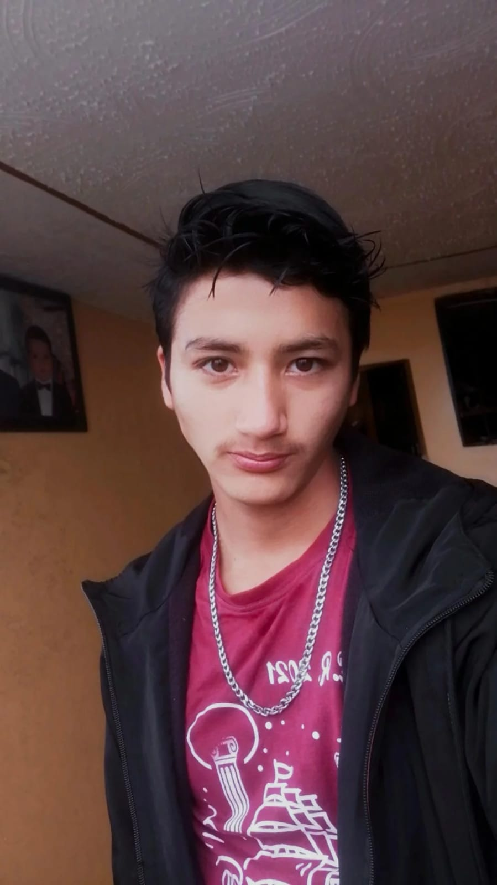

sabes, hasta ahora e conocido 2 tipos de chicos 1.el romantico
el tipico chico que le trata a su chica como a una estrella, como a una dama, como a una reina, siempre la llena de cumplido con regalos
caricias, su pequeño toue de selos que te hacen sentir querida, el que siempre estara ahi para ti, el que tiene los mejores sentimientos
del mundo, pero es inseguro por miedo de que tu no lo ames como el a ti, el seloso, el que solo te quiere para el...en fin,es el chico bueno .. 2.el chico malo
el que te hace sufrir,al que no le importas un carajo y solo quiere jugar contigo, el que solo te tiene por que tienes un buen cuerpo y ya
el que sabes que estara contigo solo hasta conseguir sexo y despues irse,el que siempre se la anda metiendose en problemas, el que toma,fuma
y hace todas esas cosas ilegales que no lo hace cualquiera.....en fin es el chico malo........
ahora la pregunta es....a cual de los dos amarias?
mientes,por uqe el chico bueno te aburre, el chico bueno te fastidia con muchos cumplidos,te enseñas a que te de regalos aunque sabes
que no te los mereses, sabes que siempre estara ahi para ti , asi que no te molestarasen esforsaarte ni un poco para complaserlo
como elo no te abla de sexo te sera muy aburrido, y poco a poco te vas a cansar de su toxisidad......asi que obtaras por consegir un
chico malo....pero para tu suerte existe un 3er tipo de chico;
un chico que quisa no tiene los mejores sentimientos, pero si las mujores intenciones, uno que quizá no este todo el tiempo para ti
pero el poco que tiene te lo dedica con tanta pasiencia y amor, que quiza en ocasiones sea como un tipo frio, pero cuando estan asolas
puede complases tus mejores espectativas sexuales, que quiza nunca te de regalos materiales, pero te dara el tiempo que no se compra
el amor ,,,que no tiene precio
y la confianza que dificilmente se consegue pero que todo eso te lo tienes dificilmente que ganar
dime......tu estarias dispuesta a luchar para consegrir a un chico como el 3ro?
exacto.....un chico malo anque te aga sufrir, ese tipo te sera interesante, por que las mujeres son curiosas y
les causa curiosidad el saber mas sobre ese chico callado y malo,ademas a las mujeres les gusta los retos, asi que poseer a ese
chico que se hace el dificil les resulta mas interesante......pero si te pones a pensar,ese tipo solo abusara de ti, sabes que te
ara sufrir, ese tipo con el tiempo empesara a abusar de ti y llegara a hacer uso de la violncia para combertirte en su esclava
...pero para tu suerte existe un 3er tipo de chico;
un chico que quisa no tiene los mejores sentimientos, pero si las mujores intenciones, uno que quizá no este todo el tiempo para ti
pero el poco que tiene te lo dedica con tanta pasiencia y amor, que quiza en ocasiones sea como un tipo frio, pero cuando estan asolas
puede complases tus mejores espectativas sexuales, que quiza nunca te de regalos materiales, pero te dara el tiempo que no se compra
el amor ,,,que no tiene precio
y la confianza que dificilmente se consegue pero que todo eso te lo tienes dificilmente que ganar
dime......tu estarias dispuesta a luchar para consegrir a un chico como el 3ro?
no eres idiota,asiq sabes de lo que estoy ablando, sabes que el 3er chico podria ser yo
si estas dispuesta a hacer ese tipo de sacrificios por ese chico 3...ps ahora dime
moririas por mi?
morirse es demaciado sencillo...sabes, cualquiera que tenga un minimo problema
podria cojer una soga y aorcarse,
cualquiera que este desilucionado de la vida, podri lansarse de un puente
cualquiera q no soporte el dolor emocional por la ruptura con una pareja o la perdida de un
ser querido, cualquiera podrias meterse un tiro morirse es demaciado facil la pregunta es....VIVIRIAS POR MI?
que cuando motivos y ganas no te falte para dejar de existir en este mundo, pienses en este
psicopata que te ama, pienses en los momentos que nos perderemos si tu no estuvieses
vivir es lo dificil, y mas cuando estamos rodeados de jente tan mierda como las que nos rodea...pero dificilmentea pesar de todo
eso, ESTARIAS DISPUESTA A VIVIR POR MI?
ya quiero estar contigo.. para vivir las cuantas aventuras y locuras que emos soñado juntos
¡¡¡¡¡¡¡TE AMOOOOOO!!!!!!!!!1
de aqui escribeme lo que quieras al mi whatssapp..
y cuentame,,que te parecio mi primer sitio web?
para ser el primero no esta tan mal...verdad?
ufffff...me tarde casi como 2 meses en escribir esto, hasta hojeras temgo por que todo este tiempo  solo e dormido de 6 a 7 horas en la noche
pero ahora voy a selebrarlo dandome el lujo de dormir las 8 horas completas jaja...
si quieres hasta puedes compartirlo con tus amigas jajaj